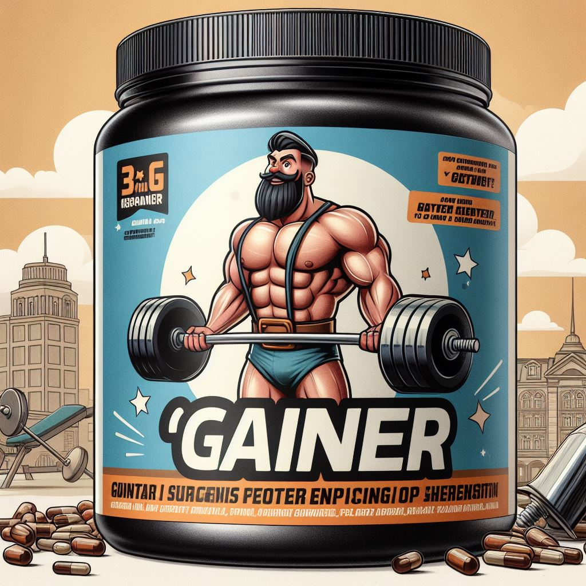

Гейнер
Гейнер — это пищевая добавка, используемая в спортивном питании для ускорения набора мышечной массы. Вот некоторые полезные сведения о гейнерах:
1) Состав и применение:
- Гейнеры состоят из белков, быстрых углеводов, небольшого количества жиров, а также ряда витаминов и микроэлементов.
- Они представляют собой порошковую смесь, которую можно смешать с водой, соком или молоком, а также добавить в пищу (например, в кашу).
- Обычно в 100 г смеси содержится 20–25 г белка, 70–72 г углеводов и 350–450 кКал.
- Гейнеры бывают разные по составу, и выбор правильного может быть сложным. Поэтому перед покупкой лучше проконсультироваться с врачом и тренером.
- Белки в гейнерах чаще всего сывороточные, а углеводы — крахмал или мальтодекстрин.
2) Для чего пьют гейнеры:
- Гейнеры помогают быстро набрать мышечную массу.
- Спортсменам, которые не могут получать достаточно калорий для роста мышц из обычной еды, гейнеры приходят на помощь.
- Они также полезны для профессиональных бодибилдеров, пауэрлифтеров, начинающих атлетов и людей с особенностями телосложения, метаболизма или низким аппетитом.
- Гейнеры также могут разгрузить желудочно-кишечный тракт, заменяя тяжелую пищу.
3) Как и когда пить гейнеры:
- Гейнеры рекомендуется употреблять как до, так и после тренировок.
- Они способствуют росту мышц и помогают восстановиться после физической активности.
Важно! Если вы планируете включить гейнер в свой рацион, обязательно проконсультируйтесь с врачом и тренером, чтобы выбрать подходящий продукт и дозировку. Помните, что индивидуальные потребности могут различаться, и важно следовать рекомендациям специалистов.
Теперь вы знаете больше о гейнерах! Если вас заинтересовал данный продукт, переходите по кнопке "Просмотр продукции" и подбирайте товар для себя!